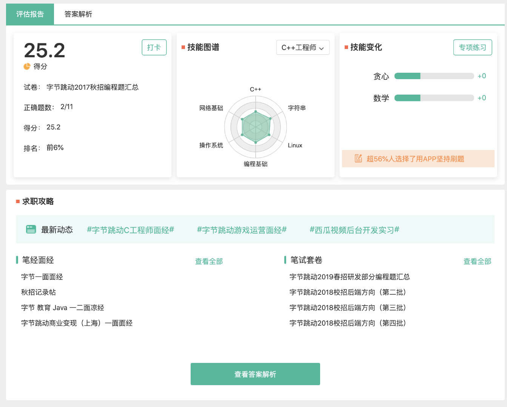

字节跳动的算法面试题是什么难度？（第二弹）
字节跳动的算法面试题是什么难度？（第二弹）
由于 lucifer 我是一个小前端， 最近也在准备写一个《前端如何搞定算法面试》的专栏，因此最近没少看各大公司的面试题。都说字节跳动算法题比较难，我就先拿 ta 下手，做了几套 。这次我们就拿一套 字节跳动2017秋招编程题汇总来看下字节的算法笔试题的难度几何。地址：https://www.nowcoder.com/test/6035789/summary
这套题一共 11 道题， 三道编程题， 八道问答题。本次给大家带来的就是这三道编程题。更多精彩内容，请期待我的搞定算法面试专栏。

其中有一道题《异或》我没有通过所有的测试用例， 小伙伴可以找找茬，第一个找到并在公众号力扣加加留言的小伙伴奖励现金红包 10 元。
1. 头条校招
题目描述
<pre class="calibre18">```
头条的 2017 校招开始了！为了这次校招，我们组织了一个规模宏大的出题团队，每个出题人都出了一些有趣的题目，而我们现在想把这些题目组合成若干场考试出来，在选题之前，我们对题目进行了盲审，并定出了每道题的难度系统。一场考试包含 3 道开放性题目，假设他们的难度从小到大分别为 a,b,c，我们希望这 3 道题能满足下列条件：
a<=b<=c
b-a<=10
c-b<=10
所有出题人一共出了 n 道开放性题目。现在我们想把这 n 道题分布到若干场考试中（1 场或多场，每道题都必须使用且只能用一次），然而由于上述条件的限制，可能有一些考试没法凑够 3 道题，因此出题人就需要多出一些适当难度的题目来让每场考试都达到要求，然而我们出题已经出得很累了，你能计算出我们最少还需要再出几道题吗？
输入描述:
输入的第一行包含一个整数 n，表示目前已经出好的题目数量。
第二行给出每道题目的难度系数 d1,d2,...,dn。
数据范围
对于 30%的数据，1 ≤ n,di ≤ 5;
对于 100%的数据，1 ≤ n ≤ 10^5,1 ≤ di ≤ 100。
在样例中，一种可行的方案是添加 2 个难度分别为 20 和 50 的题目，这样可以组合成两场考试：（20 20 23）和（35,40,50）。
输出描述:
输出只包括一行，即所求的答案。
示例 1
输入
4
20 35 23 40
输出
2
### 思路
这道题看起来很复杂， 你需要考虑很多的情况。，属于那种没有技术含量，但是考验编程能力的题目，需要思维足够严密。这种**模拟的题目**，就是题目让我干什么我干什么。 类似之前写的囚徒房间问题，约瑟夫环也是模拟，只不过模拟之后需要你剪枝优化。
这道题的情况其实很多， 我们需要考虑每一套题中的难度情况， 而不需要考虑不同套题的难度情况。题目要求我们满足：`a<=b<=c b-a<=10 c-b<=10`，也就是题目难度从小到大排序之后，相邻的难度不能大于 10 。
因此我们的思路就是先排序，之后从小到大遍历，如果满足相邻的难度不大于 10 ，则继续。如果不满足， 我们就只能让字节的老师出一道题使得满足条件。
由于只需要比较同一套题目的难度，因此我的想法就是**比较同一套题目的第二个和第一个，以及第三个和第二个的 diff**。
- 如果 diff 小于 10，什么都不做，继续。
- 如果 diff 大于 10，我们必须补充题目。
这里有几个点需要注意。
对于第二题来说：
- 比如 1 **30** 40 这样的难度。 我可以在 1，30 之间加一个 21，这样 1，21，30 就可以组成一一套。
- 比如 1 **50** 60 这样的难度。 我可以在 1，50 之间加 21， 41 才可以组成一套，自身（50）是无论如何都没办法组到这套题中的。
不难看出， 第二道题的临界点是 diff = 20 。 小于等于 20 都可以将自身组到套题，增加一道即可，否则需要增加两个，并且自身不能组到当前套题。
对于第三题来说：
- 比如 1 20 **40**。 我可以在 20，40 之间加一个 30，这样 1，20，30 就可以组成一一套，自身（40）是无法组到这套题的。
- 比如 1 20 **60**。 也是一样的，我可以在 20，60 之间加一个 30，自身（60）同样是没办法组到这套题中的。
不难看出， 第三道题的临界点是 diff = 10 。 小于等于 10 都可以将自身组到套题，否则需要增加一个，并且自身不能组到当前套题。
这就是所有的情况了。
有的同学比较好奇，我是怎么思考的。 我是怎么**保障不重不漏**的。
实际上，这道题就是一个决策树， 我画个决策树出来你就明白了。

> 图中红色边框表示自身可以组成套题的一部分， 我也用文字进行了说明。#2 代表第二题， #3 代表第三题。
从图中可以看出， 我已经考虑了所有情况。如果你能够像我一样画出这个决策图，我想你也不会漏的。当然我的解法并不一定是最优的，不过确实是一个非常好用，具有普适性的思维框架。
需要特别注意的是，由于需要凑整， 因此你需要使得题目的总数是 3 的倍数向上取整。

### 代码